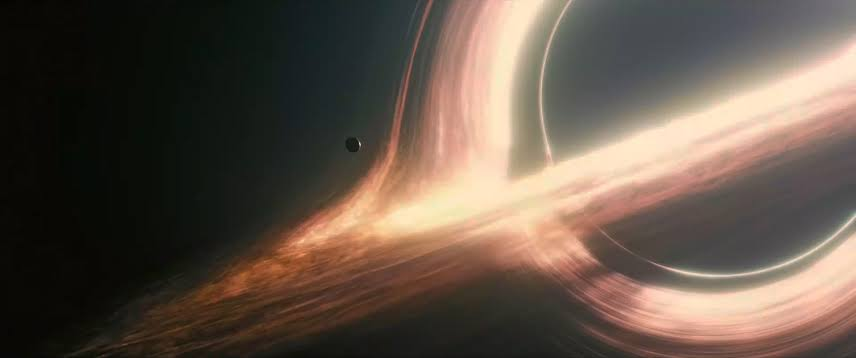
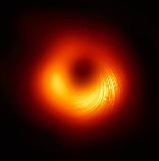
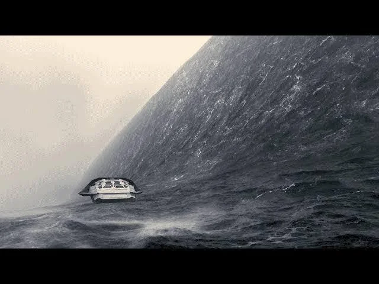
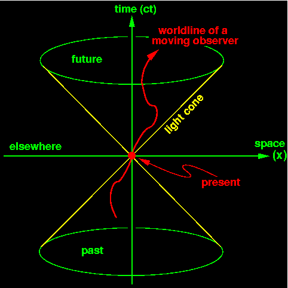
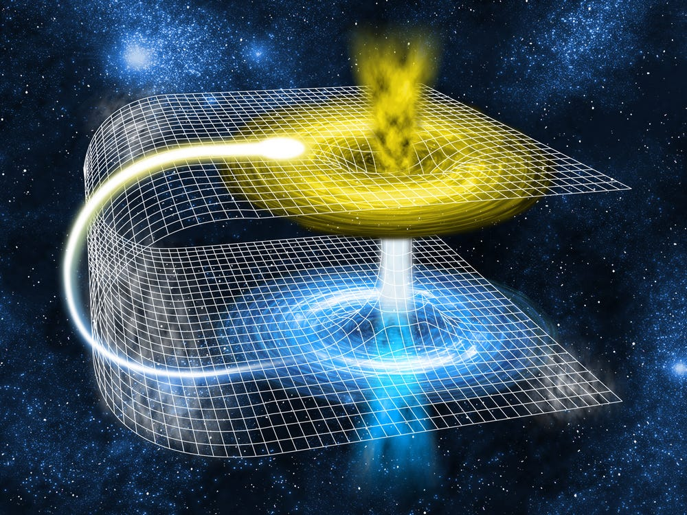
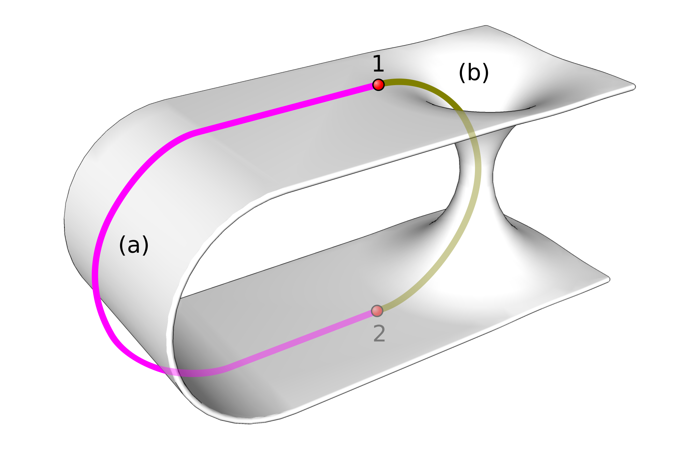
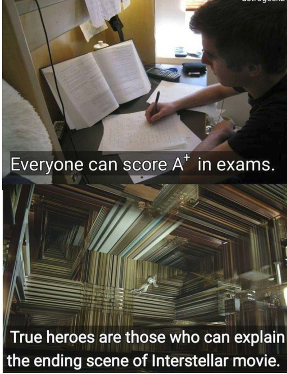

Introduction & Overview
There is no doubt that Christopher Nolan's 2014 epic, Interstellar, is a cinematic masterpiece. From its breathtaking visual effects to its haunting Hans Zimmer score, it captivates audiences on an emotional and intellectual level. Naturally, the film carries the customary disclaimer: it is a work of fiction designed primarily for entertainment.
However, unlike many sci-fi blockbusters that play fast and loose with the laws of physics, Interstellar took great pains to stay grounded in theoretical science—largely thanks to Nobel Prize-winning physicist Kip Thorne serving as an executive producer and scientific consultant. Because of this, the film doesn't just entertain; it fundamentally shifts how we think about the cosmos, challenging our perceptions of gravity, black holes, and the fabric of time itself.
Here we will be diving into the reality vs the movie fiction for the categories of space.
Face to face comparison
Supermassive Black Holes (Gargantua)
Time Dilation on Extreme Worlds
Wormholes and Interstellar Travel
| In the Movie | Reality |
|---|---|
|
The colossal black hole known as Gargantua serves as the centerpiece of the plot. It features a stunning, glowing accretion disk of superheated matter wrapped around a dark sphere. |
Interstellar actually helped make scientific history here. The visual representation of Gargantua was calculated using actual equations of general relativity. When the first real-life image of a black hole (M87*) was captured by the Event Horizon Telescope years later, scientists noted an uncanny resemblance to the movie's depiction. While the visual physics of the accretion disk were remarkably accurate, surviving the intense tidal forces or venturing inside the event horizon to send data back remains firmly in the realm of science fiction. |
|
 |
 |
| In the Movie | Reality |
|---|---|
|
When Cooper and his team visit Miller’s Planet—orbiting dangerously close to Gargantua—they experience extreme time dilation, where a single hour on the surface equals seven years back on Earth. |
This is entirely backed by Albert Einstein’s Theory of General Relativity. Gravity warps spacetime; the stronger the gravitational field, the slower time ticks for an observer within it. While the extreme rate shown in the movie requires an impossibly massive and fast-spinning black hole, the core concept that time is relative and affected by gravity is an absolute scientific fact proven by atomic clocks on GPS satellites today. |
|
 |
 |
| In the Movie | Reality |
|---|---|
|
Instead of taking thousands of years to cross the galaxy, the crew uses a spherical wormhole conveniently located near Saturn to instantly jump to a distant planetary system in another galaxy. |
In theoretical physics, a wormhole (technically an Einstein-Rosen bridge) is a mathematically plausible shortcut through spacetime predicted by general relativity. However, reality presents massive hurdles: real wormholes would likely be microscopically small, violently unstable, and collapse almost instantly upon formation. Keeping one open long enough for a spacecraft to pass through would require "exotic matter" with negative energy density—something humanity has never observed. |
|
 |
 |
Sources I used in the making of this webpage:
- Astronomy.com - Kip Thorne and the mind-bending science of Interstellar
- Smithsonian Magazine - Interstellar's Scientific Fact-Checker
- Medium (Cosmic Curiosity) - Interstellar Got the Science Right
Conclusion
While Interstellar takes creative liberties to drive its emotional narrative forward, its brilliance lies in how closely it dances with actual astrophysics. It bridges the gap between cold, hard equations and human wonder, inspiring a whole new generation to look up at the stars and question the nature of the universe.
